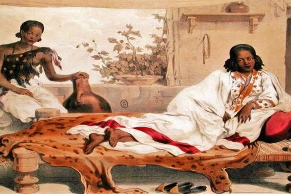

A major empire of the ancient world, the kingdom of Aksum arose in Ethiopia during the first century C.E.
This wealthy African civilization thrived for centuries,
controlling a large territorial state and access to vast trade routes linking the Roman Empire to the Middle East and India.
Aksum, the capital city, was a metropolis with a peak population as high as 20,000.
Aksum was also noteworthy for its elaborate monuments and written script,
as well as for introducing the Christian religion to the rest of sub-Saharan Africa.
The empire was situated in the highlands of northern Ethiopia, in a region called Tigray near present-day Eritrea. Humans had inhabited the region and the valleys below since the Stone Age, and agrarian communities had been there for at least a millennium. But the origins of the kingdom of Aksum are mysterious.
Territory of anicient Axum
This culture was apparently based in the village of Yeha, in the Tigray highlands about 50 kilometers (31 miles) northeast of Aksum. Another city-state seems to have existed right next to Aksum on the Bieta Giyorgis Hill. Scientists and historians are still trying to understand the process of cultural and economic development that led to the growth of a wide polity in this region. Nevertheless, it is clear that by the first century C.E. or thereabouts, Aksum had emerged as a state to unify the area. [1]
The kingdom of Aksum reached its peak power between the third and sixth centuries C.E. In those years, it was a prosperous, stratified society, with divisions ranging from high nobles, lower status members of the elite classes, and common folk. The city of Aksum grew in population, size, and the complexity of its development, while smaller towns and rural villages sprang up in surrounding areas. The kingdom exercised administrative and economic control over a swath of territory encompassing Tigray and northern Eritrea, the desert, coastal plains to the south and east, and much of the Red Sea coast (in present-day Djibouti and Somalia).
Aksum also enlarged its territory through warfare. Led by King Ezana I, Aksumites conquered the city-state of Meroe (part of present-day Sudan) in the early fourth century C.E. In the sixth century, the Aksumite King Kaleb sent a force across the Red Sea to subdue the Yemenites, subjugating them as vassals for several decades. The Roman emperor at Byzantium supported Aksum in this venture, largely in retaliation for Yemen’s persecution of Christians.
Aksum had become Christianized in the fourth century C.E. and became the first sub-Saharan African state to embrace the new Semitic religion. A figure named Frumentius is given credit for spreading the gospel to Ethiopia. Frumentius came from the Phoenician city of Tyre (present-day Lebanon). He became an advisor to the court at Aksum and a tutor to the crown prince, Ezana. After assuming the throne, Ezana proclaimed Christianity the state religion. It is unclear whether this policy decision was spurred by the kingdom’s diplomatic and trade relations with Rome, since over a hundred years before, Roman traders had already brought knowledge of the Christian religion to the Aksumite mercantile network.
The Ethiopian written language, known as Ge’ez, was derived from the Sabaean script that originated in the Arabian kingdom of Saba. Some inscribed stone slabs from the time of Aksum’s King Ezana are engraved in three languages: Ge’ez, Sabaean, and Greek. Ge’ez, though no longer the vernacular in the region, remains in use in Ethiopia’s Orthodox Church.
The kingdom’s power had eroded entirely by the end of the eighth century. One reason for its decline was the migration of the nomadic Beja peoples into the area; their independent herding activities threatened Aksum’s territorial dominance. The Aksumites lost their hold on southern Arabia, and the Persians subsequently conquered Yemen around 578 C.E. The decisive blow was the ascendance of the Arab Muslims, who became the region’s dominant power in the seventh century and assumed naval control of the Red Sea. The loss of mercantile revenue undermined the capacity of Aksum’s nobility to hold an expanded state together. Environmental factors, most notably the degradation of soils from overuse and a decline in the abundance of rainfall, created additional pressures.
Political power shifted to a new group of elites, the Agau people, who instituted the Zagwe Dynasty based in the city of Lalibela. The city of Aksum remains inhabited in the 21st century. The remnants of the old city were designated a United Nations Educational, Scientific and Cultural Organization (UNESCO) World Heritage Site in 1980. [2]
This glorious church, situated near the grounds of the axum obelisks in the holy city Axum, was built in the 4th C.A.D. and has been rebuilt several times since then. It is the only Ethiopian Orthodox Tewahdo church is claimed to contain the Ark of the Covenant. The original church is believed to have been built during the reign of Ezana the first Christian ruler of the Kingdom of Axum (Present-day Eritrea and Ethiopia), during the 4th century AD, and has been rebuilt several times since then.
Today, the site contains the Old Church rebuilt in the 16th century, the New Cathedral built by the Emperor Haile Selassie in 1950s, as well as a chapel that is said to house the Ark of the Covenant.
Axum Tsion Mariam
The Ark of the Covenant is a chest for the original engraved tablets of the Ten Commandments, brought down Mount Sinai by Moses.
Many stories are told about the location of this ark but it was claimed that the ark was brought to Ethiopia and is now at the Church of Our Lady Mary of Zion in Axum. Supposedly, only the Guardian of the Ark is allowed to view this ark.
Reportedly, the Ark was moved to the Chapel of the Tablet adjacent to the old church because a divine 'heat' from the Tablets had cracked the stones of its previous sanctum. Emperor Haile Selassie's wife, Empress Menen, paid for the construction of the new chapel.
According to tradition, the Ark came to Ethiopia with Menelik I after he visited his father King Solomon. Only the guardian monk may view the Ark, in accordance with the Biblical accounts of the dangers of doing so for non-Kohanim. This lack of accessibility, and questions about the account as a whole, has led Ethiopians and foreign scholars alike to express doubt about the veracity of the claim. The guardian monk is appointed for life by his predecessor before the predecessor dies. If the incumbent guardian dies without naming a successor, then the monks of the monastery hold an election to select the new guardian.The guardian then is confined to the chapel of the Ark of the Covenant for the rest of his life, praying before it and offering incense. [3]
The Chapel of the Tablet
 Since we got through some detailes about the greatest empire of the time, Axum, it is proper to talk about the legendary Yodit Gudit.
Gudit, Gwedit, Yodit or Judith, Queen (perhaps 10th century A.D.), also known in Amharic as 'Esato and in Teltal as Ga'Ewa, was a rebel leader to whom the downfall of the ancient Aksumite Empire is traditionally ascribed.
Yodit meaning beautiful in Geez was an Ethiopian Queen of 10th century AD (about 970). Yodit some call her Judith is known for her destruction of the Axumite Empire bringing to an end the domination for over 700 years by Alexandrian Alliance on the affairs of Ethiopians. She also known as with a negative name Gudit meaning nothing having figurative connotation. And since she burned most of the monasteries of the 9 Saints that came from Byzantine or Eastern Roman Empire in Ethiopia. She was also was attributed Esato meaning fire. In Arabic writing of the time she was known as Hwyia meaning fire too. Her family originated from the Christianity resisting in the Nile provinces of Damot . Some give her being Agew and she was the first Queen of Zagwe.
In addition to oral tradition there is considerable documentary evidence that c. 970 A.D. the ruling Aksumite dynasty was harassed by a non-Christian queen, who lay waste to the city and countryside, destroyed churches and monuments and sought to exterminate all members of the royal family, the House of David.
Because it was a long and slow process, the concrete causes of the decline of the Aksumite kingdoms are inconspicuous. The date and manner of Aksum’s decline is a topic surrounded by controversy. Ethiopian tradition is often interpreted as indicating its survival as a political capital into the tenth century, and the Aksumite coinage was formerly interpreted as having continued until that date. A more detailed study has, however, suggested a significantly shorter coinage chronology which has recently received support from radiocarbon dates for Late Aksumite occupation. It now appears that issue of the coinage ceased during the seventh century and that by or even shortly before that time the scale of human settlement at Aksum sharply declined.
The underlying cause of its decline is the shift of power southward. After the Persians ended Ethiopian involvement in southern Arabia and the Islams replaced the Aksumites in the Red Sea, Amda Tseyon's and Zara Yakob's campaigns into southern lands proved to be permenent settlements.
Until Adulis suffered a destructive attack in the middle of the 7th century, the Aksumites exported ivory, incense, tortoise-shell, and obsidian and they imported clothing, glass, iron, and weapons from Egypt, India, and Arabia (Pankhurst 23). But as Islamic expansions grew in the Red Sea and overpopulation and over-cropping wore down the once fertile land, Aksum's presence in the seashores began to diminish. Trade with other countries, however, did continue, but trading ports that were located much more southern had become more prominent.
The power shift into southern regions had become necessary once deforestation and degradation had taken its toll on the land. While forests were being cut down for construction and irregular rainfall eroded the soil, Aksumite agriculture began to collapse. The power shift southwards was also influenced by revolts occurring in surrounding areas, most notably by the Beja tribes from the north. Ethiopia's expeditions into south Arabia territories played a role in weakening its troops (Henze 44-6).
As mentioned in the above section, Queen Yodit was known for being part of the destruction of the Axumite Empire, and bringing the end of over 700 years domination. Since she burned most of the monasteries of the 9 Saints, who came from Byzantine or Eastern Roman Empire in Ethiopia, she also is known with a negative name Gudit She was also attributed to Esato meaning the fire. The Arabic writing of the time also called her Hwyia meaning fire too. According to the tale, her originated from the Christianity resisting family in the Nile provinces of Damot. Some even proclaimed her being the first Ruler of the Zagwe Dynasty. [5]
To read more about the Axumite Civilization click here.